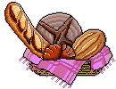
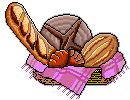
 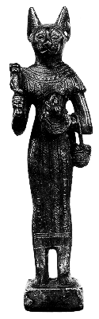
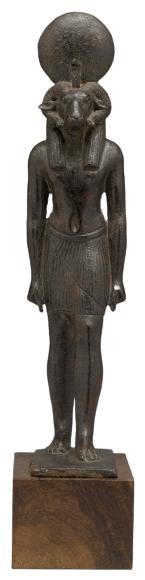
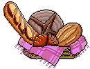
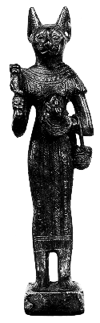
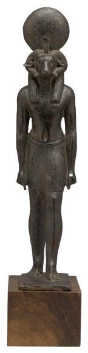
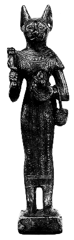
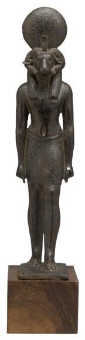
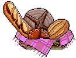
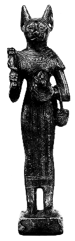
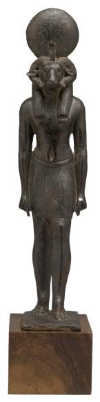

Wep Ronpet is the Kemetic New Year! In antiquity, the exact date was dependent on the rising of Sirius which also marked the beginning of the annual flooding of the Nile, and thus you might hear people in the modern Kemetic community start celebrating as early as July and as late as August depending on their latitude and tradition. I'm far enough north that I don't celebrate until closer to the end of August.
Leading up to the new year are the Epagomenal Days aka the days outside of the year where Nut was able to give birth to her five children: Wesir, Heru-Wer, Sutekh, Aset, and Nebthet.
Deity vectors by Jeff Dahl
Graphics credited in my graphics pages unless otherwise noted.